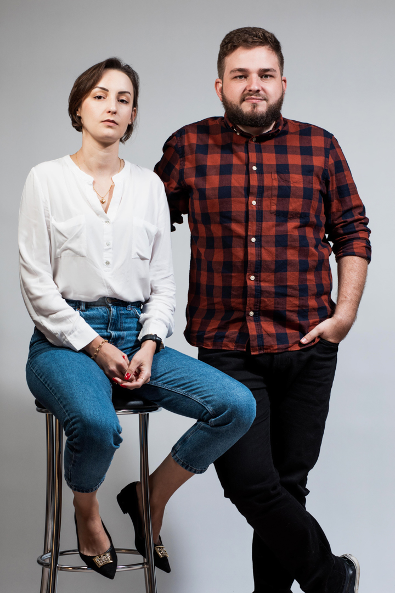

Acreditamos que as memórias mais valiosas vivem nos pequenos detalhes. Por isso, fotografamos com sensibilidade e discrição, deixando que cada história aconteça naturalmente. O resultado são imagens autênticas, capazes de fazer reviver emoções mesmo muitos anos depois.

Somos Jeanine e Rafael, apaixonados por viagens, arte, gastronomia e, acima de tudo, por contar histórias através da fotografia. Fotografamos juntos desde 2015 e compartilhamos a vida muito antes disso. Em 2018, decidimos viver uma grande aventura: moramos na Irlanda e na Itália, onde tivemos a oportunidade de conhecer diferentes culturas e ampliar nosso olhar sobre o mundo, sem nunca deixar a fotografia de lado. Hoje, toda essa bagagem faz parte da forma como fotografamos. Acreditamos que cada pessoa tem uma história única, e buscamos registrá-la com sensibilidade, autenticidade e respeito ao que torna cada momento especial. Esperamos que tenham gostado de conhecer um pouco da nossa história. Agora, queremos conhecer a de vocês.